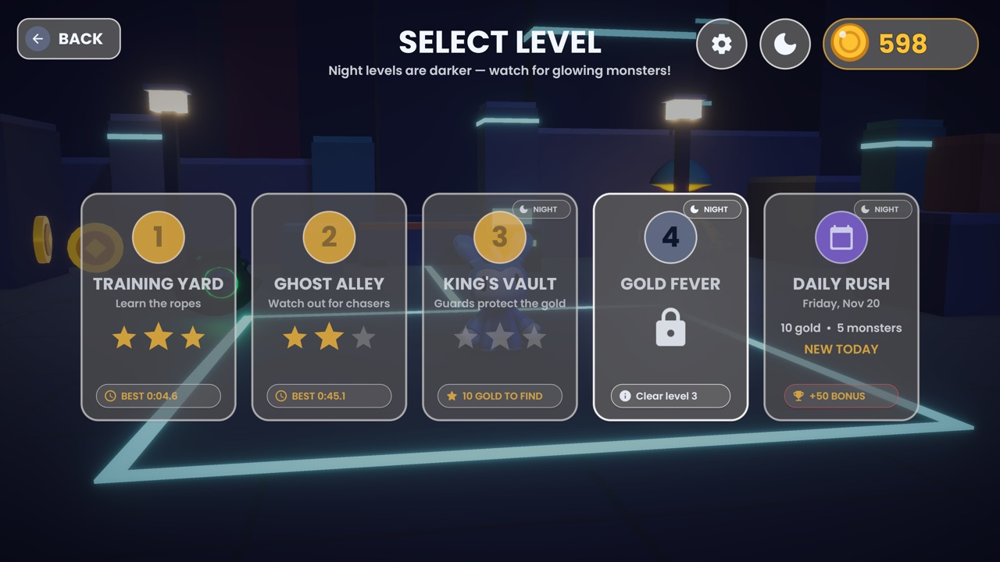
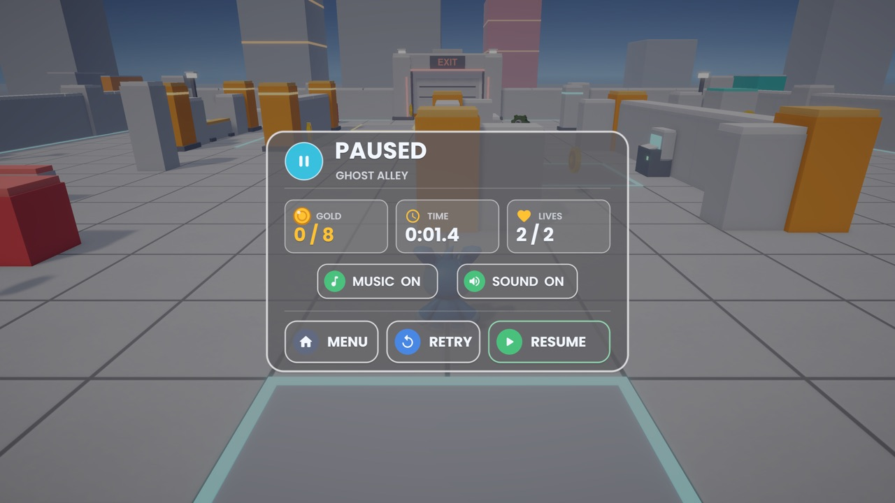

GOLD RUSH · Part 4
Rules, menu, win and lose
Now the pieces become a game: a start countdown, a timer, hearts, stars, a pause screen, the win and lose dialogs, a main menu with level select and a shop, and a save file that remembers your gold. All of the UI is built from C# code.




1The game states
Like the monsters in Part 3, the whole game uses states. GameManager is always in one of these:
public enum GameState { Intro, Playing, Paused, Won, Lost }Intro ──countdown done──▶ Playing ──Esc / P──▶ Paused
│ ▲ │
│ └──── Resume ─────┘
last heart │ │ reach open gate
lost ▼ ▼
Lost WonAlmost everything checks the state first. For example, the timer and pickups only run when State == GameState.Playing, and monsters freeze once the state is Won or Lost.
GameManager is a singleton: GameManager.I points to the one in the scene, so other scripts (the monsters, the UI) can reach it easily.
2What happens when a level starts
Awake()sets the frame rate to 60 andTime.timeScaleto 1. It works out which level this is from the scene name and stores its settings inDef(aLevelDeffromData.cs).Start()callsBuild(), which creates everything in order: the level, the hero (PlayerMotor.Create), the camera, the lighting, the HUD (GameUI.Create), coins, power-ups and monsters. Then the screen fades in.IntroCo()is a coroutine: a method that can wait. It flies the camera in, shows the level title, counts 3, 2, 1, GO!, and then setsState = Playing.
The level settings come from a simple table in Data.cs:
new LevelDef { title = "Training Yard", scene = "Level1", coins = 6, enemySpeed = 0.9f, parTime = 40 },
new LevelDef { title = "Ghost Alley", scene = "Level2", coins = 8, enemySpeed = 1f, parTime = 60 },
new LevelDef { title = "King's Vault", scene = "Level3", coins = 10, enemySpeed = 1.05f, parTime = 85, night = true },
new LevelDef { title = "Gold Fever", scene = "Level4", coins = 13, enemySpeed = 1.12f, parTime = 115, night = true },title, subtitle, enemySpeed, parTime, lives and night. The coins and monsters come from the scene (Part 3).3Getting caught and losing
When a monster touches you, it calls GameManager.OnPlayerCaught():
public void OnPlayerCaught(EnemyAI enemy)
{
if (State != GameState.Playing || !Player || Player.Invulnerable) return;
Hits++;
Lives--;
AudioFX.Play("hit");
Cam.Shake(0.45f, 0.45f);
UI.Flash(new Color(0.9f, 0.1f, 0.1f, 0.45f));
UI.SetLives(Lives, MaxLives);
if (Lives <= 0) { Lose(); return; }
Player.Hit(enemy.transform.position, 2.2f);
enemy.Stun(2.6f);
UI.Toast("OUCH!", Lives == 1 ? "Last life — be careful!" : "Lives left: " + Lives, UIKit.Red);
}- The first line is a guard: if you are not playing or you were just hit, nothing happens.
- With hearts left, you are knocked back and are invulnerable for 2.2 s, and the monster is stunned for 2.6 s.
- With no hearts left,
Lose()runs: the game goes into slow motion (Time.timeScale = 0.3f) for a moment, then the CAUGHT! dialog appears. The gold you collected is still saved (“banked”).
4Winning and stars
When you reach the open gate, Win() runs. It works out a RunResult:
var r = new RunResult
{
won = true, collected = Collected, total = TotalCoins, time = Elapsed, par = Def.parTime,
parBeaten = Elapsed <= Def.parTime, noHits = Hits == 0,
};
r.stars = 1 + (r.parBeaten ? 1 : 0) + (r.noHits ? 1 : 0);
r.goldEarned = Collected + r.stars * 5;| Star | You get it when… |
|---|---|
| ★ 1 | You finish the level (always) |
| ★ 2 | Your time is at or below the par time |
| ★ 3 | You were never hit (Hits == 0) |
The expression condition ? 1 : 0 means “1 if true, else 0”. Then the best time, the stars and the next unlocked level are saved, and after 1.5 seconds UI.ShowWin(r) opens the LEVEL COMPLETE! dialog.

5Pause with Time.timeScale
Scripts/Gameplay/GameManager.cspublic void Pause()
{
if (State != GameState.Playing) return;
State = GameState.Paused;
LockCursor(false);
Time.timeScale = 0f;
UI.ShowPause();
}Time.timeScale = 0 freezes time: Time.deltaTime becomes 0, so anything that moves with deltaTime stops. Resume() sets it back to 1. Pause works with Esc, P, the pause button, and automatically when a phone app goes into the background.
WaitForSeconds also stops. That is why the pause menu, the toasts and the screen fader use unscaled time (WaitForSecondsRealtime, Time.unscaledDeltaTime). If you add an animation to the pause menu, use unscaled time too.6The save file
All saved progress is one C# class, SaveData: gold, unlocked levels, stars and best times, owned shop items, the equipped colour and hat, and the sound settings. It is turned into JSON text and stored in PlayerPrefs:
public static void Load()
{
string json = PlayerPrefs.GetString(Key, "");
data = null;
if (!string.IsNullOrEmpty(json))
{
try { data = JsonUtility.FromJson<SaveData>(json); }
catch (Exception e) { Debug.LogWarning("[GoldRush] Save corrupted, resetting: " + e.Message); }
}
if (data == null) data = new SaveData();
Fix();
}
public static void Persist()
{
if (data == null) return;
PlayerPrefs.SetString(Key, JsonUtility.ToJson(data));
PlayerPrefs.Save();
}- Use
Save.Datato read or change the save. It loads itself the first time you use it. - After you change something, call
Save.Persist(), or the change is lost when the game quits. - A broken save does not crash the game: the
try/catchstarts a fresh one.
7The menu and the shop
MainMenu.unity holds just one GameObject, GoldRushMenu. In Start() it builds a small 3D stage with the hero and three monsters, then the UI, which has three screens: Title, Levels and Shop. Show(screen) turns the right one on and moves the camera.
- PLAY starts your next unlocked level. LEVELS shows one card per level plus the Daily Rush. Locked cards shake and play an error sound.
- Starting a level calls
StartLevel(index), which usesFader.Load(...): fade to black, load the scene, fade back in. - The Shop reads its items from
Catalog.ColorsandCatalog.HatsinData.cs. Buying an item takes its price fromSave.Data.gold, adds its id toowned, saves, and puts it on the hero.
new ShopItem("color_blue", "Classic", 0, ...),
new ShopItem("color_orange", "Sunset", 30, ...),
new ShopItem("color_gold", "Golden", 200, ...),The Daily Rush is special: it has no scene of its own. It uses Game.unity, and LevelBuilder generates a new arena from a seed made from today's date, so everyone gets the same level on the same day.
8Building UI from code
Press Play and look at the Hierarchy: the HUD, the dialogs and the menus all appear, but none of them are saved in the scene. They are created by UIKit.cs, a small toolbox of helper methods:
| Helper | What it makes |
|---|---|
UIKit.Canvas(name, order) | A Screen Space Overlay canvas, scaled for a 1920 × 1080 reference screen |
UIKit.Rect(name, parent) | An empty UI object with a RectTransform |
.At(anchor, pos, size) | Anchors it to one point (for example the top-left corner) |
.Fill() | Stretches it over its parent |
UIKit.Label(...), UIKit.Img(...) | Text and images |
UIKit.Button(...), UIKit.ChipButton(...) | Buttons with a click sound and a bounce |
public static RectTransform At(this RectTransform rt, Vector2 anchor, Vector2 pos, Vector2 size, Vector2? pivot = null)
{
rt.anchorMin = rt.anchorMax = anchor;
rt.pivot = pivot ?? anchor;
rt.sizeDelta = size;
rt.anchoredPosition = pos;
return rt;
}This sets the same four values you would set in the Rect Transform Inspector. Here it puts the coin counter 32 px from the left and 28 px from the top, sized 214 × 70:
coinPill = UIKit.Rect("CoinPill", hud).At(new Vector2(0, 1), new Vector2(32, -28), new Vector2(214, 70));new Vector2(0, 1) is the top-left corner (x = 0 is left, y = 1 is top).
9Try it
A new shop colour
In Data.cs, inside Catalog.Colors, add a line after the last colour:
new ShopItem("color_ocean", "Ocean", 40, new Color(0.1f, 0.5f, 0.75f)),Open the Shop: there is a new card. Use Give 500 Gold (debug), buy it, and the hero turns ocean blue. The id must be unique. (A new hat needs more work: hats are built in code in CharacterFactory.cs.)
Three hearts
In Data.cs, in class LevelDef, change public int lives = 2; to 3. Every level now gives three hearts. (The HUD has room for 3. More would need more heart icons in GameUI.cs.)
Easier par
Change Level 1's parTime = 40 to 90. The HUD shows PAR 1:30, and the second star is easy.
More gold per star
In GameManager.Win(), change r.stars * 5 to r.stars * 20. A three-star win now pays 60 extra gold.
Your own lose tips
In GameUI.ShowLose(), add your own sentence to the tips array, or change the title "CAUGHT!".
Dramatic slow motion
In GameManager's lose coroutine, change Time.timeScale = 0.3f to 0.1f.
- I can follow a level from
Awake()to the countdown toPlaying. - I can explain how the three stars and the earned gold are calculated.
- I know what
Time.timeScale = 0does, and why paused UI needs unscaled time. - I can add an item to the shop, and I know to call
Save.Persist()after changing the save.